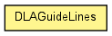

toxi.sim.dla
Class DLAGuideLines
java.lang.Object
 toxi.sim.dla.DLAGuideLines
toxi.sim.dla.DLAGuideLines
public class DLAGuideLines
- extends java.lang.Object

| Methods inherited from class java.lang.Object |
equals, getClass, hashCode, notify, notifyAll, toString, wait, wait, wait |
segments
public java.util.SortedSet<DLASegment> segments
iterator
public java.util.Iterator<DLASegment> iterator
DLAGuideLines
public DLAGuideLines()
DLAGuideLines
public DLAGuideLines(java.util.Comparator<toxi.geom.Line3D> comparator)
addCurveStrip
@Deprecated
public DLAGuideLines addCurveStrip(java.util.List<toxi.geom.Vec3D> points)
- Deprecated. use
addPointList(List) instead
- Parameters:
points -
- Returns:
- itself
addLine
public DLAGuideLines addLine(toxi.geom.Line3D l)
addLine
public DLAGuideLines addLine(toxi.geom.Vec3D a,
toxi.geom.Vec3D b)
addPoint
public DLAGuideLines addPoint(toxi.geom.Vec3D p)
addPointList
public DLAGuideLines addPointList(java.util.List<toxi.geom.Vec3D> points)
getCurrentSegmentPos
public double getCurrentSegmentPos()
getDirection
public toxi.geom.Vec3D getDirection()
getPoint
public toxi.geom.Vec3D getPoint()
isComplete
public boolean isComplete()
reset
public DLAGuideLines reset()
updatePoint
public DLASegment updatePoint(double delta)